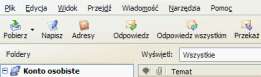
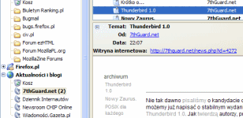
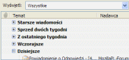
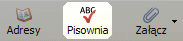
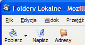
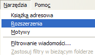

Dlaczego warto używać Thunderbirda
Jest wiele powodów, dla których warto używać Thunderbirda zamiast innych klientów poczty. Oto lista najważniejszych.
Filtr niechcianej poczty - pozbądź się spamu!
 Zmęczony spamem oraz irytującymi reklamami w Twojej skrzynce odbiorczej? Mozilla Thunderbird oferuje najskuteczniejsze metody wykrywania i usuwania niechcianej poczty. Nasze narzędzia analizują Twoje wiadomości oraz identyfikują te z nich, które najprawdopodobniej są niepożądane. Możesz zdecydować o automatycznym usuwaniu lub przenoszeniu do innego folderu tego typu wiadomości.
Zmęczony spamem oraz irytującymi reklamami w Twojej skrzynce odbiorczej? Mozilla Thunderbird oferuje najskuteczniejsze metody wykrywania i usuwania niechcianej poczty. Nasze narzędzia analizują Twoje wiadomości oraz identyfikują te z nich, które najprawdopodobniej są niepożądane. Możesz zdecydować o automatycznym usuwaniu lub przenoszeniu do innego folderu tego typu wiadomości.
Aby aktywować filtr niechcianej poczty udaj się do menu Narzędzia/Filtr niechcianej poczty
, a następnie w zakładce Inteligentny filtr
zaznacz opcję Włącz filtr niechcianej poczty dla bieżącego konta
.
Zmiana motywów - niech wygląda tak jak lubisz!
Motywy umożliwiają dostosowanie wyglądu Thunderbirda wedle własnych potrzeb/gustów. Za pomocą motywów można zmienić tylko ikony paska narzędzi, lub każdy element wyglądu aplikacji. Pobranie oraz instalacja nowych motywów to kwestia kilku kliknięć!
Emotikony
Emotikony, popularne uśmieszki na dobre wbiły się do naszej świadomości. Towarzyszą nam one na każdym kroku, czy to na stronach internetowych, forach dyskusyjnych, czy też podczas rozmowy z przyjaciółmi za pomocą komunikatora. Dlaczego więc nie korzystać z zalet graficznego przedstawiania emocji w programie pocztowym? Z Thunderbirdem jest to możliwe! Wystarczy tylko wejść w Narzędzia/Opcje
, zakładka Wyświetlanie
i zaznaczyć opcję Wyświetlaj emotikonki
, a uśmieszki w przychodzących wiadomościach będą wyświetlane w postaci graficznej.
Obsługa kanałów RSS i Atom
Program pocztowy jest dla wiekszości użytkowników komputerów jednym z podstawowych i najczęściej używanych narzędzi komunikacji oraz pracy. A co gdyby można było mieć w tym samym programie dostęp do najnowszych informacji z serwisów informacyjnych oraz blogów, informacji z kraju i ze świata, z ulicy i z boiska? Z Thunderbirdem jest to możliwe! Dzięki wbudowanej w program obsłudze kanałow RSS i Atom, możesz mieć dostęp do nagłówków i treści aktualności ze stron, które wspierają ten format publikacji danych.
Grupowanie wiadomości
 Grupowanie wiadomości to bardzo ciekawa funkcja, która może ułatwić życie bardzo wielu osobom, szczególnie tym, które na codzień otrzymują duzą ilość listów i nie chcą się w nich pogubić. Thunderbird umożliwia posegregowanie wiadomości na grupy w zależności od daty, etykiety, nadawcy, adresata, priorytetu czy statusu wiadomości znajdujących się w danym folderze.
Foldery ustawień wyszukiwania
Jeszcze żaden program pocztowy nie dawał możliwości tak precyzyjnego wyszukiwania wiadomosci jak Thunderbird.
Foldery ustawień wyszukiwania (ang. Saved Search Folders) są potężnym mechanizmem ułatwiającym
wyszukiwanie danych, wyświetlają one wiadomości w oparciu o wcześniej ustawione kryteria wyszukiwania. Umożliwiają
wyszukiwanie wiadomości według daty, nadawcy, tematu, treści wiadomości, priorytetu, załącznika i wielu, wielu innych
cech - oczywiście nic nie stoi na przeszkodzie, aby łączyć ze sobą te kryteria. Możesz na przykład stworzyć folder ustawień
wyszukiwania, który pokazuje wszystkie wiadomości zawierające w treści słowo Thunderbird
, otrzymane od
wybranej osoby w ostatnim miesiącu, nawet jeśli są one przechowywane w różnych folderach i podfolderach.
Wbudowane sprawdzanie pisowni
Inteligentne sprawdzanie pisowni dba o profesjonalny wygląd napisanych przez ciebie wiadomości.
Nie ma potrzeby instalowania zewnętrznych aplikacji do sprawdzania pisowni. Mozilla Thunderbird posiada wbudowany mechanizm sprawdzania pisowni, rozwijany przez członków projektu Spellchecker. Jedyne co musisz zrobić, to kliknąć na przycisk Pisownia w pasku narzędzi, a Thunderbird zacznie pracować dla ciebie.
Dostosowywalne paski narzędzi
Ustaw paski narzędzi w taki sposób, w jaki tylko chcesz. Możesz mieć wąski pasek tylko z tym, co najpotrzebniejsze, albo wiele pasków z wszystkimi możliwymi opcjami. Paski narzędzi Thunderbirda są w pełni konfigurowalne, więc wyglądają tak, jak sobie tego życzysz. Wybierz Widok -> Paski narzędzi -> Dostosuj... i po prostu przenieś wszystkie ikony, których potrzebujesz. Thunderbird pozwala także tworzyć nowe paski narzędzi. Niektóre rozszerzenia dodają też nowe pozycje do palety dostępnych ikon, które również można wykorzystać.
Rozszerzenia
Rozszerzenia to małe programy, które dodają nową funkcjonalność do Thunderbirda. To może być wszystko, od przycisku po zupełnie nowe funkcje, jak gesty myszy. Wspaniałą rzeczą w przypadku rozszerzeń jest to, że pozwalają Thunderbirdowi pozostać małym i czystym. Każdy kto potrzebuje więcej funkcji może pobrać odpowiedne rozszerzenie. Posiadając znajomość języków takich jak XML, CSS i JavaScript możesz także z łatwością stworzyć własne rozszerzenia.
Bezpieczeństwo
Dzięki takim technologiom jak S/MIME, cyfrowy podpis, szyfrowanie wiadomości oraz wsparcie dla urządzeń bezpieczństwa, jak np. inteligentne karty, Mozilla Thunderbird zapewnia najwyższą klasę bezpieczeństwa, stając się godnym polecenia produktem dla instytucji rządowych oraz przedsiębiorstw, gdzie bezpieczeństwo i poufność przesyłanych informacji mają kluczowe znaczenie.
W przeciwieństwie do innych produktów, Mozilla Thunderbird domyślnie nie zezwala na uruchamianie skryptów. Dzięki temu jest on bezpieczniejszym produktem od innych klientów poczty oraz pomaga zatrzymać rozprzestrzenianie się robaków i wirusów poprzez internet.